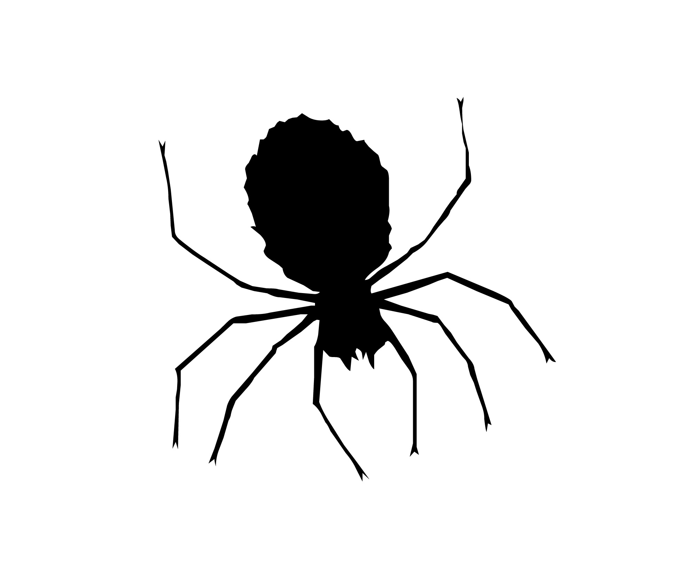

Project Idea

Scouting Spider
Scouting Spider is meant to be a multiplatform data analysis tool built for FIRST Robotics.
JSON & CSV
Scouting Spider takes in many different data types from many transfer formats, primarily QR codes. This allows wider compatibility with tools that use multiple formats.
Internet Later archtexure
Scouting spider takes on an Internet-later approach, meaning the internet is not required to run the majority of the app.
About the Program
This prject was initally started my sophmore year of highschool (23-24), where I was a lead in traning and main devloper of some sort of scouting egnine. over the years I have contiuted to build on older ideas and impove apoun what did and didnt work.